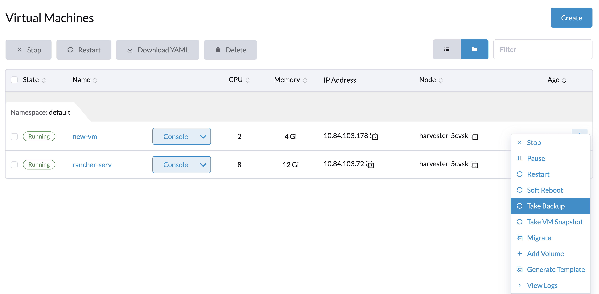
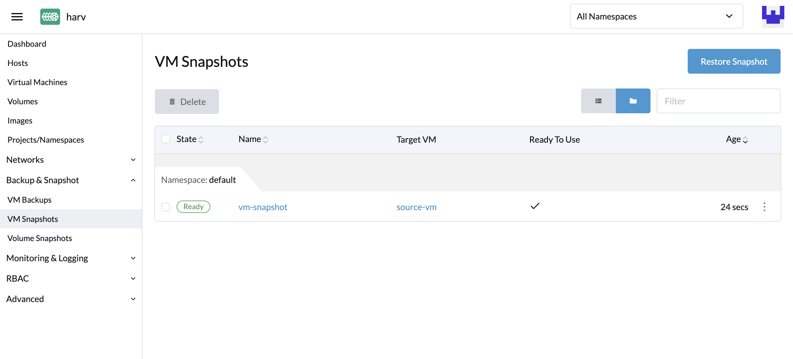

|
この文書は自動機械翻訳技術を使用して翻訳されています。 正確な翻訳を提供するように努めておりますが、翻訳された内容の完全性、正確性、信頼性については一切保証いたしません。 相違がある場合は、元の英語版 英語 が優先され、正式なテキストとなります。 |
仮想マシンのバックアップ、スナップショットおよび復元
仮想マシンのバックアップと復元
仮想マシンのバックアップは、仮想マシン*ページから作成されます。仮想マシンのバックアップボリュームは、*バックアップターゲット（NFSまたはS3サーバー）に保存され、新しい仮想マシンを復元するか、既存の仮想マシンを置き換えるために使用できます。

|
バックアップターゲットを設定する必要があります。詳細については、[Configure Backup Target]を参照してください。バックアップターゲットが設定されていない場合、設定するように促すメッセージが表示されます。 バックアップのサポートは現在、SUSE Storageボリュームに制限されています。SUSE Virtualizationは外部ストレージのボリュームのバックアップを作成できません。 |
バックアップターゲットを設定する
バックアップターゲットは、SUSE Virtualizationのバックアップストアにアクセスするために使用されるエンドポイントです。バックアップストアは、仮想マシンボリュームのバックアップを保存するNFSサーバーまたはS3互換サーバーです。バックアップターゲットは`Settings > backup-target`で設定できます。
以下の表は、すべてのバックアップターゲットに共通するパラメータを示しています。
| パラメータ | タイプ | 説明 |
|---|---|---|
|
文字列 |
仮想マシンによって使用されるボリュームのバックアップを保存するサーバーの種類。`NFS`または`S3`のいずれかを選択できます。 |
|
integer |
SUSE Virtualizationがバックアップストアとバックアップをsyncする前に待機する秒数。値が`0`の場合、すべてのバックアップボリュームが`Ready`の状態にある場合のみバックアップがsyncされます。 |
-
S3
-
NFS
| パラメータ | タイプ | 説明 |
|---|---|---|
|
文字列 |
（オプション）S3サーバーにアクセスするために使用されるエンドポイントのホスト名またはIPアドレス |
|
文字列 |
S3バケットの名前 |
|
文字列 |
S3バケットが作成されたAWSリージョン |
|
文字列 |
AWSサービスへのリクエストを認証するために使用するアクセスキーの最初の部分（例： |
|
文字列 |
AWSサービスへのリクエストを認証するために使用するアクセスキーの第二部（例： |
証明書 |
文字列 |
S3サーバの自己署名SSL証明書 |
VirtualHostedStyle |
boolean |
バケット名がURLのドメイン名の一部となる仮想ホストスタイルのURLを使用するオプション（ |
| パラメータ | タイプ | 説明 |
|---|---|---|
エンドポイント |
文字列 |
NFSサーバのURL |
仮想マシンバックアップを作成する
-
バックアップターゲットが設定されたら、`Virtual Machines`ページに移動します。
-
仮想マシンのアクションの`Take Backup`をクリックして、新しい仮想マシンバックアップを作成します。
-
カスタムバックアップ名を設定し、`Create`をクリックして新しい仮想マシンバックアップを作成します。

*結果:*バックアップが作成されました。通知メッセージが届き、`Backup & Snapshot > VM Backups`ページに移動してすべての仮想マシンバックアップを表示することもできます。
バックアップが完了すると、`State`は`Ready`に設定されます。

ユーザーは、このバックアップを使用して新しい仮想マシンを復元するか、既存の仮想マシンを置き換えることができます。
|
Ubuntuリリース16.04以降を実行している仮想マシンのネットワーク設定は、デフォルトで`netplan`によって管理される可能性があります。バックアップを作成する前に、仮想マシンを停止し、設定を編集（Edit Config → Advanced Options）し、その後仮想マシンを再起動する必要があります。DHCP設定の参考として、以下の`network`設定を使用してください。 復元された仮想マシンは、元の仮想マシンのマシンIDを保持します。`dhcp-identifier: mac`が指定されていない場合、復元された仮想マシンは、デフォルトで`netplan`がマシンIDをDHCPクライアント識別子として使用するため、DHCPサーバから同じIPアドレスを受け取ります。これが、Ubuntuを実行している仮想マシンのバックアップを作成する前に`network`設定を構成する必要がある理由です。これを怠ると、予期しない動作や潜在的なネットワークの競合が発生する可能性があります。 |
|
v1.7.0以降、SUSE VirtualizationはLonghorn V2 Data Engineボリュームのバックアップとスナップショットをサポートしています。 ただし、仮想マシンの最新バックアップを削除するか、SUSE Storage設定 Auto Cleanup Snapshot When Delete Backupを有効にすると、関連するボリュームに対するすべての後続の操作がブロックされます。これは 既知の問題であり、ボリュームスナップショット、バックアップ、ライブマイグレーションなどの操作に影響を与えます。 現在、実行可能な回避策はありません。ブロックされた状態を解決するには、影響を受けたボリュームを削除してLonghorn Managerの機能を復元する必要があります。 |
バックアップを使用して新しい仮想マシンを復元します。
-
`VM Backups`ページに移動します。
-
右上の`Restore Backup`ボタンをクリックします。
-
新しい仮想マシンの名前を指定し、`Create`をクリックします。
-
バックアップボリュームとメタデータを使用して新しい仮想マシンが復元され、`Virtual Machines`ページからアクセスできます。

バックアップを使用して既存の仮想マシンを置き換えます。
同じバックアップターゲットを使用して、既存の仮想マシンをバックアップで置き換えることができます。
以前のボリュームを削除するか保持するかを選択できます。デフォルトでは、すべての以前のボリュームが削除されます。
*要件:*仮想マシンは存在する必要があり、電源オフの状態である必要があります。
-
`VM Backups`ページに移動します。
-
右上の`Restore Backup`ボタンをクリックします。
-
`Replace Existing`をクリックします。
-
`Virtual Machines`ページから復元処理を表示できます。

別のSUSE Virtualizationクラスターに新しい仮想マシンを復元します。
ユーザーは、仮想マシンのメタデータとコンテンツバックアップ機能を活用して、別のクラスターに新しい仮想マシンを復元できるようになりました。
前提条件
-
v1.4.0以降：コントローラーは、新しいクラスターに同じ名前または表示名の仮想マシンイメージが既に存在しない限り、仮想マシンイメージを自動的に新しいクラスターとsyncします。
-
v1.4.0より前：新しいクラスターに仮想マシンイメージをアップロードして構成する必要があります。仮想マシンを復元できるように、イメージ名と設定が同一であることを確認してください。
同じ仮想マシンイメージを新しいクラスターにアップロードしてください。
-
既存のクラスターから仮想マシンイメージをダウンロードしてください。

-
ダウンロードしたイメージを解凍してください。
$ gzip -d <image.gz>
-
新しいクラスターがアクセスできるサーバーにイメージをホストしてください。
例（シンプルなHTTPサーバー）：
$ python -m http.server
-
既存のイメージ名（通常は`image-`で始まります）を確認し、新しいクラスターに同じものを作成してください。
$ kubectl get vmimages -A NAMESPACE NAME DISPLAY-NAME SIZE AGE default image-79hdq focal-server-cloudimg-amd64.img 566886400 5h36m default image-l7924 harvester-v1.0.0-rc2-amd64.iso 3964551168 137m default image-lvqxn opensuse-leap-15.3.x86_64-nocloud.qcow2 568524800 5h35m -
新しいクラスターに同じ名前と設定の`VirtualMachineImage` YAMLを適用してください。
例:
$ cat <<EOF | kubectl apply -f - apiVersion: harvesterhci.io/v1beta1 kind: VirtualMachineImage metadata: name: image-79hdq namespace: default spec: displayName: focal-server-cloudimg-amd64.img pvcName: "" pvcNamespace: "" sourceType: download url: https://<server-ip-to-host-image>:8000/<image-name> EOF
SUSE Virtualizationは、古いクラスターと新しいクラスターの両方で仮想マシンイメージの名前と設定が同一である場合にのみ、仮想マシンを復元できます。
仮想マシンスナップショットと復元
仮想マシンスナップショットは、*仮想マシン*ページから作成されます。仮想マシンスナップショットボリュームはクラスターに保存され、新しい仮想マシンを復元するか、既存の仮想マシンを置き換えるために使用できます。

仮想マシンスナップショットを作成してください。
-
`Virtual Machines`ページに移動します。
-
新しい仮想マシンスナップショットを作成するには、VMアクションの`Take VM Snapshot`をクリックしてください。
-
カスタムスナップショット名を設定し、`Create`をクリックして新しい仮想マシンスナップショットを作成します。

*結果:*スナップショットが作成されました。`Backup & Snapshot > virtual machine Snapshots`ページに移動して、すべてのVMスナップショットを表示することもできます。
スナップショットが完了すると、`State`は`Ready`に設定されます。

ユーザーは、このスナップショットを使用して新しい仮想マシンを復元するか、既存の仮想マシンを置き換えることができます。
|
Ubuntuリリース16.04以降を実行している仮想マシンのネットワーク構成は、デフォルトで`netplan`によって管理される可能性があります。バックアップを作成する前に、仮想マシンを停止し、構成を編集（Edit Config → Advanced Options）し、その後仮想マシンを再起動する必要があります。DHCP構成の参考として、以下の`network`設定を使用してください。 復元された仮想マシンは、元の仮想マシンのマシンIDを保持します。`dhcp-identifier: mac`が指定されていない場合、復元された仮想マシンは、デフォルトで`netplan`がマシンIDをDHCPクライアント識別子として使用するため、DHCPサーバから同じIPアドレスを受け取ります。これが、Ubuntuを実行している仮想マシンのバックアップを作成する前に`network`設定を構成する必要がある理由です。これを怠ると、予期しない動作や潜在的なネットワークの競合が発生する可能性があります。 |
|
v1.7.0以降、SUSE VirtualizationはLonghorn V2データエンジンボリュームのバックアップとスナップショットをサポートしています。 ただし、仮想マシンの最新のバックアップを削除すると、関連するボリュームに対するすべての後続の操作がブロックされます。これは、ボリュームスナップショット、バックアップ、およびライブマイグレーションなどの操作に影響を与える 既知の問題です。 現在、実行可能な回避策はありません。ブロックされた状態を解決するには、影響を受けたボリュームを削除してLonghorn Managerの機能を復元する必要があります。 |


仮想マシンスナップショットスペース管理
新しい仮想マシンのバックアップまたはスナップショットを作成するたびに、ボリュームはクラスター内で追加のディスクスペースを消費します。これを管理するために、ネームスペースと仮想マシンのレベルでスペース使用制限を設定できます。設定された値は、すべてのバックアップとスナップショットによって使用できる最大のディスクスペースを表します。デフォルトでは制限は設定されていません。


仮想マシンのバックアップとスナップショットのためのファイルシステムフリーズ
ゲスト仮想マシンが*QEMUゲストエージェント*に接続されているとき、SUSE VirtualizationコントローラーはKubevirtの virt-freezerアプリケーションを通じてファイルシステムフリーズ操作を実行し、仮想マシンのバックアップとスナップショット中のファイルシステムの整合性を確保します。
この機能は、高いI/Oアクティビティや時点整合性の保証が必要な重要なデータを持つ仮想マシンにとって特に価値があります。
前提条件
ファイルシステムフリーズと解凍機能は、仮想マシンの設定に依存しており、_SUSE Virtualizationによって制御されていません。_仮想マシンが正しく設定され、必要なlibvirtコマンドをサポートしていることを確認する必要があります。
-
Red Hat Enterprise Linux (RHEL)*および*SUSE Linux Enterprise (SLE) Micro：これらのシステムは、デフォルトでファイルシステムフリーズ操作に対する十分な権限を持っていない可能性があります。カスタムSELinuxポリシーを作成する必要があるかもしれません。
-
Windows:ファイルシステムフリーズ操作は、これらのシステムでボリュームシャドウコピーサービス（VSS）サービスが有効な場合にのみ利用可能です。
|
virt-freezerアプリケーションがトリガーされると、KubeVirtはQEMUゲストエージェントと通信して、オペレーティングシステム固有の呼び出しを変換します。Linuxシステムはfsfreezeシステムコールを使用し、WindowsシステムはVSS APIを使用します。 |
ファイルシステムフリーズの互換性を確認する
仮想マシンがファイルシステムフリーズ操作をサポートしていることを確認するために、次の手順を実行してください。
-
仮想マシンの virt-launcher
computeコンテナにアクセスします。POD=$(kubectl get pods -n default \ -l vm.kubevirt.io/name=vm1 \ -o jsonpath='{.items[0].metadata.name}') kubectl exec -it $POD -n default -c compute -- bash -
computeコンテナ内で利用可能な virt-freezer アプリケーションを使用して、ファイルシステムをフリーズしようとします。virt-freezer --freeze --namespace <VM namespace> --name <VM name> -
フリーズ操作の結果を確認します。
このステップはスキップしないでください。さらに、他の操作を行う前に仮想マシンのファイルシステムのフリーズを解除する必要があります。
ファイルシステムのフリーズ問題のトラブルシューティング
権限不足によるファイルシステムフリーズエラー
Failed to freeze filesystem エラーは、一部の Linux配布パッケージ でバックアップやスナップショットのエラーを引き起こす可能性があります。
この問題は通常、SELinux が QEMU ゲストエージェント (qemu-ga) への読み取りアクセスを拒否する場合に発生します。以下の手順を使用して原因を確認できます。
-
[仮想マシンがファイルシステムフリーズ操作をサポートしていることを確認します](#verifying-filesystem-freeze-compatibility)。
-
システムログで SELinux
Permission deniedエラーを確認します。次のようなメッセージが表示された場合、SELinux が必要なアクセスをブロックしています。
{"component":"freezer","level":"error","msg":"Freezing VMI failed","reason":"server error. command Freeze failed: \"LibvirtError(Code=1, Domain=10, Message='internal error: unable to execute QEMU agent command 'guest-fsfreeze-freeze': failed to open /data: Permission denied')\""}
問題を解決するには、カスタム SELinux ポリシーモジュールを作成してインストールする必要があります。この解決策は、RHEL および SLE Micro で動作することが確認されています。
|
|
-
監査ログからカスタム SELinux ポリシーモジュールを生成します。
grep qemu-ga /var/log/audit/audit.log | audit2allow -M my_qemu_ga -
生成されたポリシーモジュールをインストールします。
semodule -i my_qemu_ga.pp -
virt-freezer がファイルシステムを正常にフリーズできるまで、手順 1 と 2 を繰り返します。
他の操作を行う前に、仮想マシンのファイルシステムのフリーズを解除する必要があります。
virt-freezer --unfreeze --namespace <VM namespace> --name <VM name>
スケジュールされた仮想マシンのバックアップとスナップショット
SUSE Virtualization は、特定の数のバックアップとスナップショットを保持するオプションを持ち、スケジュールに基づいて仮想マシンのバックアップとスナップショットの作成をサポートします。実行時にスケジュールを一時停止、再開、更新できます。
仮想マシンスケジュールを作成する
-
仮想マシンスケジュール 画面に移動し、次に スケジュールを作成 をクリックします。

-
次の設定を行います。

-
タイプ：バックアップ または スナップショット のいずれかを選択します。
-
ネームスペース と 仮想マシン名：ソース仮想マシンのネームスペースと名前を指定します。
-
cronスケジュール：スケジュールプロパティを定義する、空白で区切られたフィールドからなる文字列であるcron式を指定します。
バックアップまたはスナップショットの作成間隔は 少なくとも1時間 でなければなりません。頻繁なバックアップまたはスナップショットの削除は、重いI/O負荷を引き起こします。
2つのスケジュールが同じ粒度レベルを持つ場合、各反復のタイミングオフセットは 少なくとも10分 でなければなりません。
-
保持:保持する最新のバックアップまたはスナップショットの数を指定します。
この値を超えると、SUSE Virtualization コントローラーは最も古いバックアップまたはスナップショットを削除し、Longhornはスナップショットのパージを開始します。
-
最大エラー：バックアップまたはスナップショットの作成において、連続してエラーが発生した試行の最大回数を指定します。
この値を超えると、SUSE Virtualization コントローラーはスケジュールを一時停止します。
-
-
［作成］をクリックします。
仮想マシンスケジュールのステータスを確認する
-
仮想マシンスケジュール 画面に移動します。
-
対象のスケジュールを見つけて、名前をクリックして詳細画面を開きます。
-
*基本*タブで、設定が正しいことを確認します。

-
*バックアップ*タブで、スケジュールに従って作成されたバックアップまたはスナップショットの状態を確認します。

*準備完了*とマークされたバックアップとスナップショットは、ソース仮想マシンを復元するために使用できます。詳細については、「[Virtual Machine Backup & Restore]」および「[Virtual Machine Snapshot & Restore]」を参照してください。

仮想マシンスケジュールを編集する
-
仮想マシンスケジュール 画面に移動します。
-
対象のスケジュールを見つけて、*⋮ → 設定を編集*を選択します。

-
cronスケジュール、保持、または*最大エラー*の値を編集します。

-
変更を適用するには*保存*をクリックします。
仮想マシンスケジュールを一時停止または再開する
アクティブなスケジュールを一時停止し、一時停止したスケジュールを再開できます。
-
仮想マシンスケジュール 画面に移動します。
-
対象のスケジュールを見つけて、*⋮ → 一時停止*または*再開*を選択します。

バックアップまたはスナップショットの作成において連続してエラーが発生した回数が、*最大エラー*の値を超えた場合、スケジュールは自動的に一時停止されます。
SUSE Virtualizationは、バックアップターゲットにアクセスできない場合、一時停止されたスケジュールをバックアップ作成のために再開することを許可しません。
|
*最大エラー*の値を超えたためにスケジュールが自動的に一時停止された場合、バックアップまたはスナップショットが正常に作成できることを確認した後に、そのスケジュールを明示的に再開する必要があります。例えば、バックアップターゲットが再び接続可能になった後、最初に手動でバックアップを作成し、その結果を確認できます。 |
仮想マシン操作とSUSE Virtualizationアップグレード
SUSE Virtualizationをアップグレードする前に、仮想マシンのバックアップやスナップショットが使用中でないこと、すべての仮想マシンスケジュールが一時停止されていることを確認してください。SUSE Virtualization UIは、アップグレードの試行が拒否されたときに次のエラーメッセージを表示します：
-
仮想マシンのバックアップまたはスナップショットが、アップグレードの試行中に作成、削除、または使用されています。

-
仮想マシンスケジュールがアップグレードの試行中にアクティブです。

このような問題を避けるために、SUSEはアップグレードプロセスが開始される前にすべての仮想マシンスケジュールを自動的に一時停止することを計画しています。一時停止されたスケジュールは、アップグレードが完了した後に自動的に再開されます。詳細については、 問題 #6759を参照してください。
|
SUSE Storageには、 定期的なスナップショットとバックアップと呼ばれる類似の機能があり、定期的なジョブを使用してSUSE Storageボリュームの定期的なスナップショットまたはバックアップを作成します。この機能は、特定の操作（例えば、仮想マシンのアタッチやクラスターのアップグレード）と競合するため、SUSE Virtualizationには統合されていません。定期的なSUSE Storageスナップショットおよびバックアップジョブは、SUSE Virtualizationの認識なしに重いI/Oを生成することがあり、場合によってはクラスターを不安定にすることさえあります。 最良の結果を得るためには、SUSE Virtualizationの「スケジュールされた仮想マシンのバックアップとスナップショット」機能を使用してください。この機能には、可能な限り重いI/Oを軽減するための安全機構があります。再度、SUSE Virtualizationは定期的なSUSE Storageスナップショットとバックアップをサポートしていません。 |